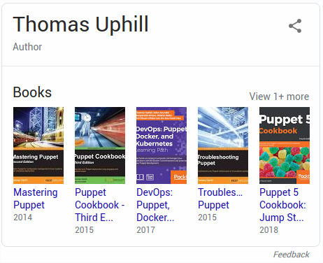

Linux Systems Troubleshooting
Thomas Uphill
thomas@uphillian.com
Me
consulting@uphillian.com
A story
Backup
⇨
gethostbyname
Backup
⇨
gethostbyname
Where to start?
ltrace
Why? Because UNIX is oldLove Ken
KISS
How it all works
Kernel
| application | user |
| ⇳ system calls ⇳ | |

|
kernel |
| ⇳ driver/module ⇳ | |
| hardware |
System Calls
Documentation
man syscalls
Shared Libraries
glibc
libc.so
[root@localhost ~]# ltrace hostname
_libc_start_main(0x401230, 1, 0x7ffd4a91dd48, 0x401ea0 <unfinished ...>
rindex("hostname", '/') = nil
strcmp("hostname", "domainname") = 4
strcmp("hostname", "ypdomainname") = -17
strcmp("hostname", "nisdomainname") = -6
getopt_long(1, 0x7ffd4a91dd48, "aAdfbF:h?iIsVy", 0x4028a0, nil) = -1
__errno_location() = 0x7fefda8a86b0
malloc(128) = 0x1a0a010
gethostname("localhost.localdomain", 128) = 0
memchr("localhost.localdomain", '\0', 128) = 0x1a0a025
puts("localhost.localdomain"localhost.localdomain) = 22
+++ exited (status 0) +++
[root@localhost ~]# ltrace -S hostname
brk@SYS(nil) = 0x2386000
mmap@SYS(nil, 4096, 3, 34, -1, 0) = 0x7f28906de000
access@SYS("/etc/ld.so.preload", 04) = -2
open@SYS("/etc/ld.so.cache", 524288, 01) = 3
fstat@SYS(3, 0x7ffcfb5c0830) = 0
mmap@SYS(nil, 22425, 1, 2, 3, 0) = 0x7f28906d8000
close@SYS(3) = 0
open@SYS("/lib64/libnsl.so.1", 524288, 022033410520) = 3
read@SYS(3, "\177ELF\002\001\001", 832) = 832
fstat@SYS(3, 0x7ffcfb5c0890) = 0
mmap@SYS(nil, 2202232, 5, 2050, 3, 0) = 0x7f28902a4000
mprotect@SYS(0x7f28902ba000, 2097152, 0) = 0
mmap@SYS(0x7f28904ba000, 8192, 3, 2066, 3, 90112) = 0x7f28904ba000
mmap@SYS(0x7f28904bc000, 6776, 3, 50, -1, 0) = 0x7f28904bc000
close@SYS(3) = 0
open@SYS("/lib64/libc.so.6", 524288, 022033410520) = 3
read@SYS(3, "\177ELF\002\001\001\003", 832) = 832
fstat@SYS(3, 0x7ffcfb5c0860) = 0
mmap@SYS(nil, 3981792, 5, 2050, 3, 0) = 0x7f288fed7000
mprotect@SYS(0x7f2890099000, 2097152, 0) = 0
mmap@SYS(0x7f2890299000, 24576, 3, 2066, 3, 1843200) = 0x7f2890299000
mmap@SYS(0x7f289029f000, 16864, 3, 50, -1, 0) = 0x7f289029f000
close@SYS(3) = 0
mmap@SYS(nil, 4096, 3, 34, -1, 0) = 0x7f28906d7000
mmap@SYS(nil, 8192, 3, 34, -1, 0) = 0x7f28906d5000
arch_prctl@SYS(4098, 0x7f28906d5740, 0x7f28906d6050, 34) = 0
mprotect@SYS(0x7f2890299000, 16384, 1) = 0
mprotect@SYS(0x7f28904ba000, 4096, 1) = 0
mprotect@SYS(0x602000, 4096, 1) = 0
mprotect@SYS(0x7f28906df000, 4096, 1) = 0
munmap@SYS(0x7f28906d8000, 22425) = 0
__libc_start_main(0x401230, 1, 0x7ffcfb5c21e8, 0x401ea0 <unfinished ...>
rindex("hostname", '/') = nil
strcmp("hostname", "domainname") = 4
strcmp("hostname", "ypdomainname") = -17
strcmp("hostname", "nisdomainname") = -6
getopt_long(1, 0x7ffcfb5c21e8, "aAdfbF:h?iIsVy", 0x4028a0, nil) = -1
__errno_location() = 0x7f28906d56b0
malloc(128 <unfinished ...>
brk@SYS(nil) = 0x2386000
brk@SYS(0x23a7000) = 0x23a7000
brk@SYS(nil) = 0x23a7000
< malloc resumed> ) = 0x2386010
gethostname( <unfinished ...>
uname@SYS(0x7ffcfb5c1e40) = 0
< gethostname resumed> "localhost.localdomain", 128) = 0
memchr("localhost.localdomain", '\0', 128) = 0x2386025
puts("localhost.localdomain" <unfinished ...>
fstat@SYS(1, 0x7ffcfb5c1ec0) = 0
mmap@SYS(nil, 4096, 3, 34, -1, 0) = 0x7f28906dd000
write@SYS(1, "localhost.localdomain\n", 22localhost.localdomain
) = 22
< puts resumed> ) = 22
exit_group@SYS(0 <no return ...>
+++ exited (status 0) +++
# file /bin/hostname
/bin/hostname: ELF 64-bit LSB executable, x86-64, version 1 (SYSV), dynamically linked (uses shared libs), for GNU/Linux 2.6.32, BuildID[sha1]=c2b88b145e890709f0a93fdab448bfc40d10eb18, strippedExecutable
andLinkable
Format
Linker
ld.so
/etc/ld.so.conf
/lib64/ld-linux-x86_64.so.2
man ld.so
# ldd /bin/hostname
linux-vdso.so.1 => (0x00007ffcda7dd000)
libnsl.so.1 => /lib64/libnsl.so.1 (0x00007f43c4f06000)
libc.so.6 => /lib64/libc.so.6 (0x00007f43c4b39000)
/lib64/ld-linux-x86-64.so.2 (0x00007f43c5120000)
# objdump -R /bin/hostname
/bin/hostname: file format elf64-x86-64
DYNAMIC RELOCATION RECORDS
OFFSET TYPE VALUE
...
0000000000603140 R_X86_64_JUMP_SLOT gethostname@GLIBC_2.2.5
# man ld.soLD_PRELOAD
A list of additional, user-specified, ELF shared libraries to be loaded before all others.
LD_DEBUG
# LD_DEBUG=help /bin/true
Valid options for the LD_DEBUG environment variable are:
libs display library search paths
reloc display relocation processing
files display progress for input file
...
# LD_DEBUG=versions /bin/true
checking for version `GLIBC_2.3' in file /lib64/libc.so.6 [0] required by file /bin/true [0]
checking for version `GLIBC_2.3.4' in file /lib64/libc.so.6 [0] required by file /bin/true [0]
checking for version `GLIBC_2.14' in file /lib64/libc.so.6 [0] required by file /bin/true [0]
You cannot escape
wikipedia.org
getip.c
#include <netdb.h>
#include <stdio.h>
#include <stdlib.h>
#include <unistd.h>
#include <netinet/in.h>
#include <sys/socket.h>
#include <sys/types.h>
#include <arpa/inet.h>
int main()
{
char hostname[256];
char *IPbuffer;
struct hostent *hostStruct;
int h;
gethostname(hostname, sizeof(hostname));
hostStruct = gethostbyname(hostname);
if (hostStruct) {
IPbuffer = inet_ntoa(*((struct in_addr*) hostStruct->h_addr_list[0]));
printf("Using IP: %s\n", IPbuffer);
return 0;
} else {
printf("Couldn't find IP for %s\n", hostname);
return 1;
}
}gethostname
#include <unistd.h>
int gethostname(char *name, size_t len);getip_wrapper.c
#include <unistd.h>
#include <string.h>
#include <stdio.h>
#include <stdlib.h>
int gethostname (char *name, size_t len) {
char newname[] = "getip_hostname";
int name_len = strlen(newname);
memcpy(name,newname, name_len < len ? name_len : len);
return 0;
}
It's a machine, Skroeder.
It doesn't get pissed off.
It doesn't get happy,
it doesn't get sad,
it doesn't laugh at your jokes.
It just runs programs.
More background
Booting process
| BIOS |
Bootsector 0 |
Bootloader 512 |
|
| Kernel [0] |
init 1 |
Processes
fork
parent/child
ps -eo "%P %p %c" |sort -n |lessfake filesystems
| /proc | /sys |
File Descriptors
everything is a file...
| STDIN | STDOUT | STDERR |
| 0 | 1 | 2 |
#!/usr/bin/env python
import os
import time
pid = os.fork()
if pid == 0:
print("Child")
pid = os.fork()
if pid == 0:
print("Grandchild")
while True:
time.sleep(1)
else:
print("Parent, Child PID: %s" % pid)doublefork